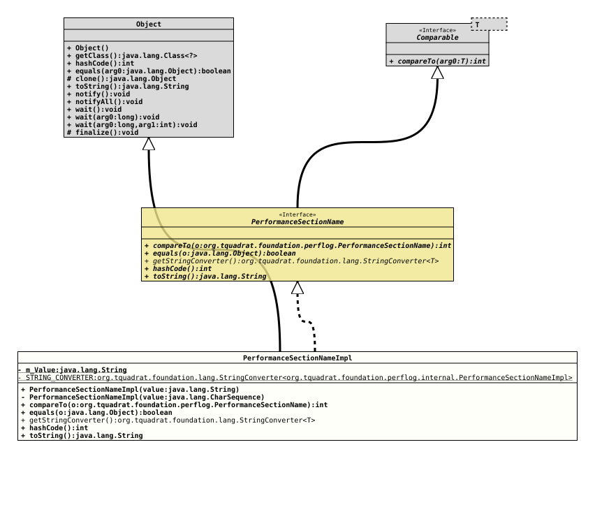

Class PerformanceSectionNameImpl
java.lang.Object
org.tquadrat.foundation.perflog.internal.PerformanceSectionNameImpl
- All Implemented Interfaces:
Comparable<PerformanceSectionName>, PerformanceSectionName
@ClassVersion(sourceVersion="$Id: PerformanceSectionNameImpl.java 1211 2026-05-01 15:24:10Z tquadrat $")
@API(status=INTERNAL,
since="0.25.0")
public final class PerformanceSectionNameImpl
extends Object
implements PerformanceSectionName
The implementation of
PerformanceSectionName.
- Author:
- Thomas Thrien (thomas.thrien@tquadrat.org)
- Version:
- $Id: PerformanceSectionNameImpl.java 1211 2026-05-01 15:24:10Z tquadrat $
- Since:
- 0.25.0
- UML Diagram
-

UML Diagram for "org.tquadrat.foundation.perflog.internal.PerformanceSectionNameImpl"
{kind=link}
-
Field Summary
FieldsModifier and TypeFieldDescriptionprivate final StringThe internal value for the performance section name.private static final StringConverter<PerformanceSectionNameImpl> TheStringConverterfor this class. -
Constructor Summary
ConstructorsModifierConstructorDescriptionprivateCreates a new instance ofPerformanceSectionNameImpl.PerformanceSectionNameImpl(String value) Creates a new instance ofPerformanceSectionNameImpl. -
Method Summary
Modifier and TypeMethodDescriptionfinal intfinal booleanstatic <T extends PerformanceSectionName>
StringConverter<T> Returns theStringConverterfor instances of this class.final inthashCode()final StringtoString()
-
Field Details
-
m_Value
-
STRING_CONVERTER
TheStringConverterfor this class.
-
-
Constructor Details
-
PerformanceSectionNameImpl
Creates a new instance ofPerformanceSectionNameImpl.- Parameters:
value- The value for the name.
-
PerformanceSectionNameImpl
Creates a new instance of
PerformanceSectionNameImpl.This constructor was introduced solely to simplify the implementation for the string converter provided by this class. Internally, it calls
PerformanceSectionNameImpl(String).- Parameters:
value- The value for the name.- See Also:
-
-
Method Details
-
compareTo
- Specified by:
compareToin interfaceComparable<PerformanceSectionName>- Specified by:
compareToin interfacePerformanceSectionName
-
equals
-
getStringConverter
Returns theStringConverterfor instances of this class.- Type Parameters:
T- The type that is handled by the returnedStringConverterinstance.- Returns:
- The
StringConverter.
-
hashCode
- Specified by:
hashCodein interfacePerformanceSectionName- Overrides:
hashCodein classObject
-
toString
-